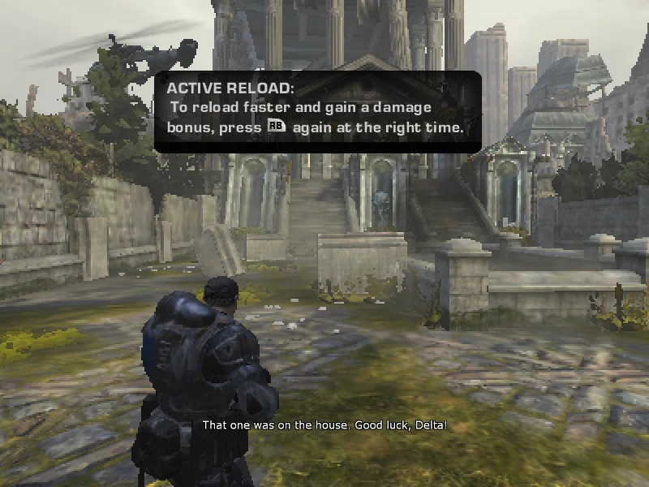
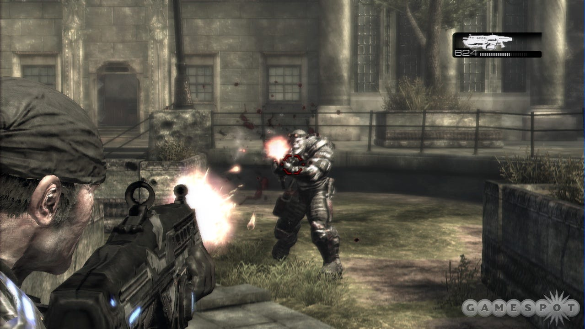
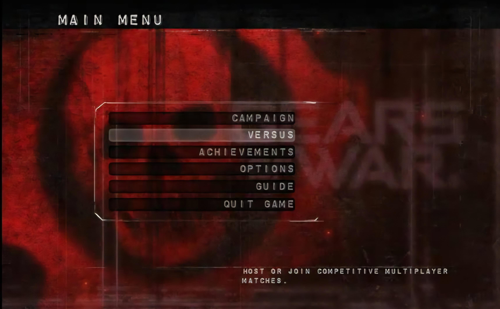

Gears of War (2006)
« Voltar para Seleção do Game
 |
 |
 |
 |
Desenvolvedora: Epic Games
Plataforma: Xbox 360, PC
Ano de Lançamento: 2006
Sinopse: Gears of War foca na luta da humanidade contra a horda Locust no planeta Sera.
O jogo revolucionou o sistema de cobertura e apresenta um clima sombrio e cinematográfico, além de ter sido eleito game do ano.